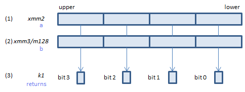
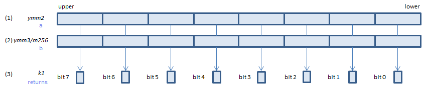
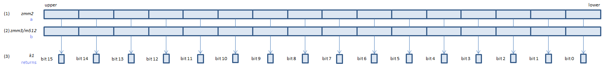

VPCMPUD - Packed CoMPare Unsigned Dword (imm8=2)
VPCMPUD k1{k2}, xmm2, xmm3/m128/m32bcst, 2 (V5+VL
__mmask8 _mm_cmple_epu32_mask(__m128i a, __m128i b)
__mmask8 _mm_mask_cmple_epu32_mask(__mmask8 k2, __m128i a, __m128i b)

For each unsigned DWORD, if (1) <= (2) set 1, else set 0, to the corresponding bit of (3).
If k2 bit is 0, the comparison is not done and the corresponding bit of (3) is set to zero. Upper bits of (3) are zero cleared.
VPCMPUD k1{k2}, ymm2, ymm3/m256/m32bcst, 2 (V5+VL
__mmask8 _mm256_cmple_epu32_mask(__m256i a, __m256i b)
__mmask8 _mm256_mask_cmple_epu32_mask(__mmask8 k2, __m256i a, __m256i b)

For each unsigned DWORD, if (1) <= (2) set 1, else set 0, to the corresponding bit of (3).
If k2 bit is 0, the comparison is not done and the corresponding bit of (3) is set to zero. Upper bits of (3) are zero cleared.
VPCMPUD k1{k2}, zmm2, zmm3/m512/m32bcst, 2 (V5
__mmask16 _mm512_cmple_epu32_mask(__m512i a, __m512i b)
__mmask16 _mm512_mask_cmple_epu32_mask(__mmask16 k2, __m512i a, __m512i b)

For each unsigned DWORD, if (1) <= (2) set 1, else set 0, to the corresponding bit of (3).
If k2 bit is 0, the comparison is not done and the corresponding bit of (3) is set to zero. Upper bits of (3) are zero cleared.
x86/x64 SIMD Instruction List
Feedback